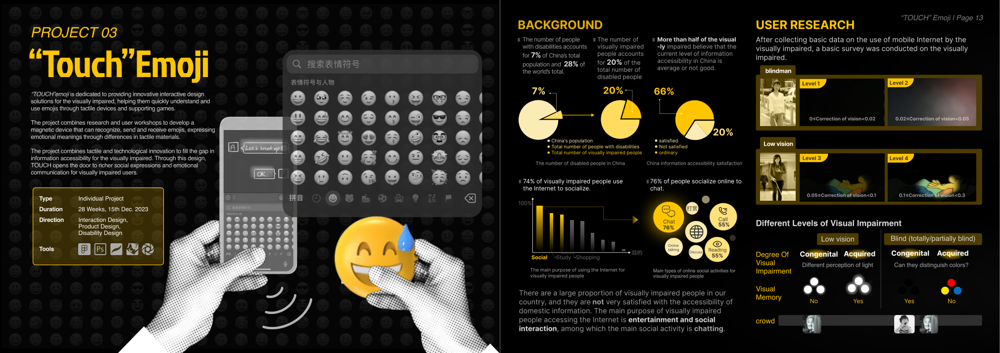
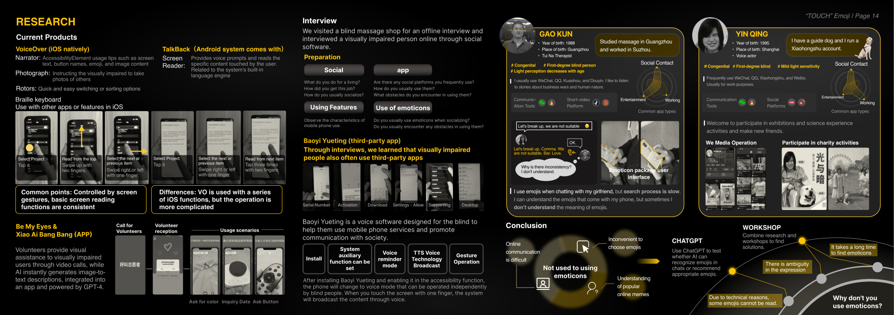
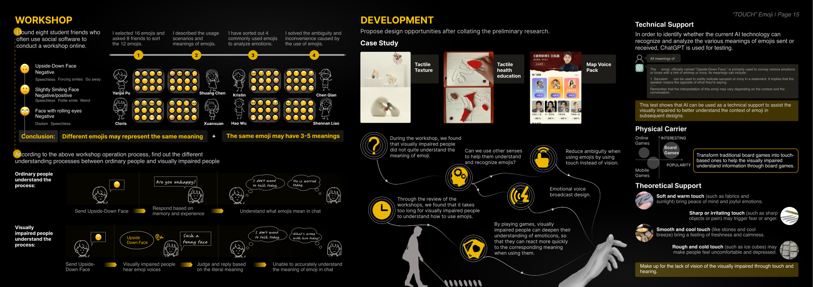
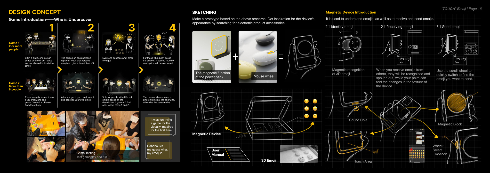
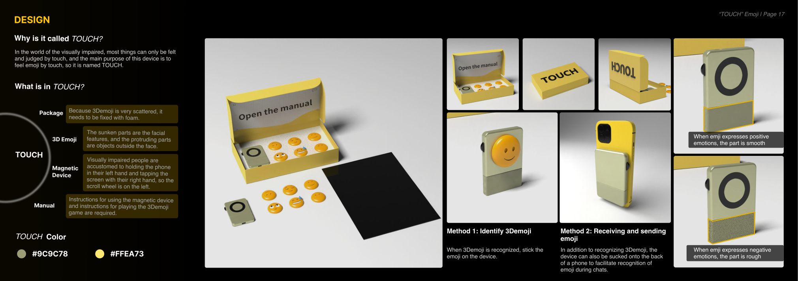

Project problem
Visually impaired users often encounter ambiguity, slow search processes, and partial screen-reader limitations when emojis appear in chats. Social expression becomes difficult precisely where nuance and context matter most.
Project 03
Interaction Design · Product Design · Disability DesignA tactile and magnetic emoji system that helps visually impaired users understand, receive, and send emojis through touch and sound.

Overview
This page keeps the same visual language as the home page, but expands the project into a readable case-study structure.
Visually impaired users often encounter ambiguity, slow search processes, and partial screen-reader limitations when emojis appear in chats. Social expression becomes difficult precisely where nuance and context matter most.
The project translates emoji meaning into textured, tactile forms and combines them with a magnetic device, spoken prompts, and game-based learning to reduce ambiguity and increase speed of use.
emojis tested in workshop sorting
identify, receive, and send emoji
combining tactile, magnetic, and audio interaction
Project story
The structure below is web-first rather than PDF-first, so each stage of the project can be scanned more easily.
The project begins with broader information-accessibility challenges in China and then narrows to online social interaction. Interviews show that visually impaired users do chat socially online, but emojis remain difficult to interpret quickly and consistently.
Offline and online interviews, app comparison, and workshops revealed a key gap: ordinary users rely on visual memory and context, while visually impaired users often receive literal voice output without reliable social meaning. The same emoji can carry multiple meanings.
TOUCH introduces a magnetic device with tactile 3D emojis. Positive and negative emotional tendencies are reflected in material texture, while receiving, identifying, and selecting emojis becomes a more embodied interaction. A supporting game deepens familiarity and confidence.
The final design includes the device, emoji pieces, packaging, a manual, and a social board-game format. It positions accessibility not only as assistive function but as richer participation in emotional communication.
Selected visuals
Click any image to enlarge it.



